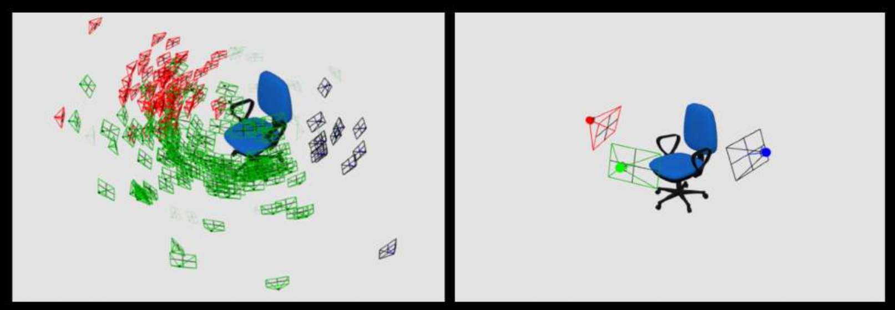

ABOUT
Finding the optimal viewpoint for a 3D object is crucial for visualization, digital marketing, and shape retrieval. Because viewpoint preference is driven by subjective semantic and aesthetic biases, data-driven approaches require large datasets of user preferences. This project presents a framework to collect viewpoint data by implicitly tracking users during casual interactions with 3D objects. We publicly release both the dataset and the configurable tool used to gather it.
DATASET & TOOL